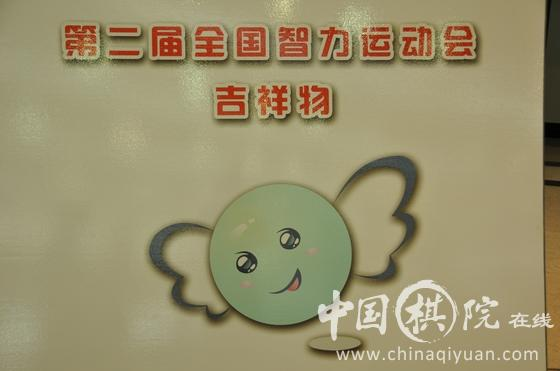

智运会会徽和吉祥物揭晓 主题才耀荆楚智泽中华
#1 智运会会徽和吉祥物揭晓 主题才耀荆楚智泽中华 作者：梧桐风 发表时间：2011-8-9 11:32:39
7月28日，第二届全国智运会会徽、吉祥物发布暨官网开通仪式在中国棋院举行，国家体育总局棋牌中心主任、第二届全国智运会组委会执行副主任刘思明和湖北省体育局局长、组委会执行副主任胡德春出席仪式并致辞。发布仪式由总局棋牌中心副主任范广升主持。发布仪式上揭晓的第二届全国智运会会徽名为“舞动的棋子”，由“问号”和“感叹号”两个标点符号构成，问号象征着思考和智慧，感叹号则表示自信、果敢和拼搏。吉祥物名为蓝色精灵“棋棋”，是以棋子为原型，形似“W”寓意本届智运会的主办地湖北。本届智运会的主题口号是“才耀荆楚，智泽中华”。
胡德春介绍说，本届智运会各项筹备工作进入关键时期，组委会下一步将着力加强和完善以下五项工作，即：完善场馆设施、办好开闭幕式等大型活动、深度开发市场、扩大对外宣传和提供优质服务。
刘思明代表总局棋牌中心对湖北各有关方面对第二届智运会筹备付出的辛勤劳动表示由衷的感谢。他表示，会徽、吉祥物和主题口号等赛会核心组成元素的确定，标志着本届赛会的各项组织筹备工作基本就绪，已进入最后的冲刺阶段。在未来三个多月里，我们将加大力度利用全民健身日以及其他重大比赛活动的机会为第二届全国智运会造势，力争以智运会为龙头在全国范围内再次掀起棋牌运动的热潮。
最后，刘思明、胡德春、湖北省体育局副局长林晓华、武汉体院党委副书记黄签名、腾讯网体育频道总编张雷、北京中体明星体育文化传播有限公司总经理王奇等共同按下本届智运会官网启动装置，标志着第二届全国智运会官网正式开通。
第二届全国智运会由国家体育总局和湖北省人民**主办，国家体育总局棋牌运动管理中心和湖北省体育局共同承办，武汉体育学院协办，将于2011年11月8日至18日在武汉举行。
(中国体育报 陈君)

#2 Re:智运会会徽和吉祥物揭晓 主题才耀荆楚智泽中华 作者：梧桐风 发表时间：2011-8-9 11:33:21
 棋棋挺可爱的~
棋棋挺可爱的~
#3 Re:智运会会徽和吉祥物揭晓 主题才耀荆楚智泽中华 作者：小元 发表时间：2011-8-9 12:15:38
#4 Re:Re:智运会会徽和吉祥物揭晓 主题才耀荆楚智泽中华 作者：黄药师 发表时间：2011-8-9 20:15:25
引用：哇，我儿子小名就叫棋棋
原文由 梧桐风 发表于 2011-8-9 11:33:21 :

［ 掌棋宣传员 于 2011-8-10 1:44:55 时花20金币送鲜花一朵］
［ 掌棋宣传员 于 2011-8-10 1:44:57 时花20金币送鲜花一朵］
［ 掌棋宣传员 于 2011-8-10 1:44:59 时花20金币送鲜花一朵］
［ 闫荣辉 于 2011-10-11 21:19:22 时花20金币送鲜花一朵］
#5 Re:智运会会徽和吉祥物揭晓 主题才耀荆楚智泽中华 作者：奇林 发表时间：2011-8-11 22:13:22
我一直都是qiqi［ 闫荣辉 于 2011-10-11 21:22:32 时花20金币送鲜花一朵］
#6 Re:智运会会徽和吉祥物揭晓 主题才耀荆楚智泽中华 作者：五连达人 发表时间：2011-8-11 22:16:28

#7 Re:智运会会徽和吉祥物揭晓 主题才耀荆楚智泽中华 作者：小元 发表时间：2011-8-12 17:15:56
这个吉祥物谁设计的？#8 Re:智运会会徽和吉祥物揭晓 主题才耀荆楚智泽中华 作者：吉小鼠 发表时间：2011-8-13 11:09:41
 那个吉祥物好可爱~~~~~~~~
那个吉祥物好可爱~~~~~~~~
#9 Re:智运会会徽和吉祥物揭晓 主题才耀荆楚智泽中华 作者：嵯峨 发表时间：2011-8-13 13:26:27
 有卖棋棋饰品什么的吗。。。钥匙扣挂坠什么的。。。
有卖棋棋饰品什么的吗。。。钥匙扣挂坠什么的。。。
#10 Re:智运会会徽和吉祥物揭晓 主题才耀荆楚智泽中华 作者：蓝天蓝 发表时间：2011-8-14 21:25:26
吉祥物 设计的挺可爱#11 Re:智运会会徽和吉祥物揭晓 主题才耀荆楚智泽中华 作者：王安石 发表时间：2011-10-11 8:51:57
7月28日，第二届全国智运会会徽、吉祥物发布暨官网开通仪式在中国棋院举行，国家体育总局棋牌中心主任、第二届全国智运会组委会执行副主任刘思明和湖北省体育局局长、组委会执行副主任胡德春出席仪式并致辞。发布仪式由总局棋牌中心副主任范广升主持。#12 Re:智运会会徽和吉祥物揭晓 主题才耀荆楚智泽中华 作者：小小亦默 发表时间：2011-10-11 19:50:30
我要买几个带回贵州送我侄女
#13 Re:智运会会徽和吉祥物揭晓 主题才耀荆楚智泽中华 作者：暖瞳 发表时间：2011-10-12 0:37:42
WOW~吉祥物好好可爱哦~可以买到么？